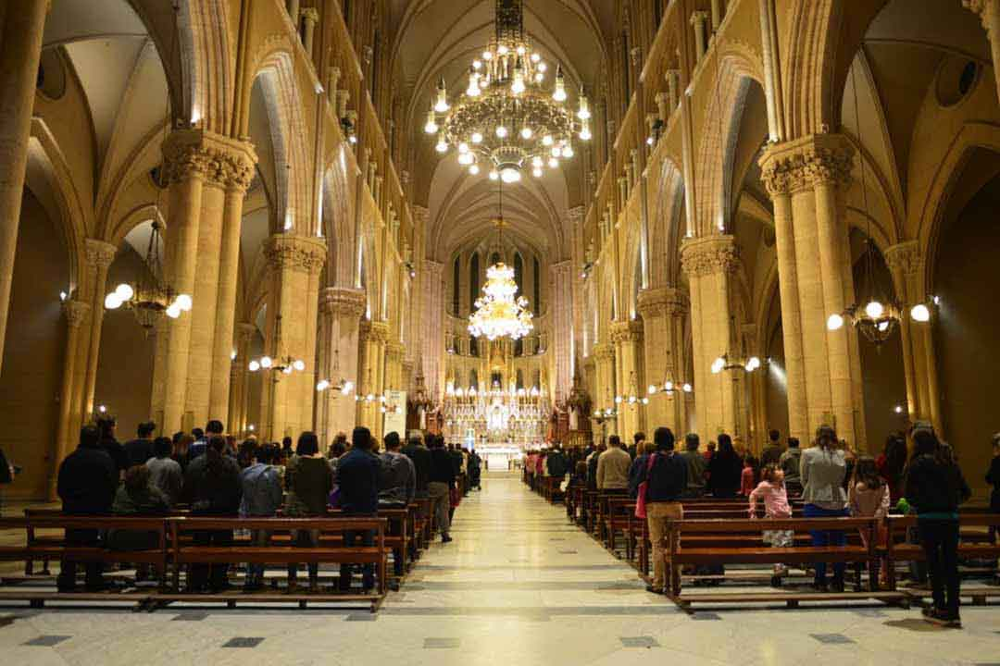
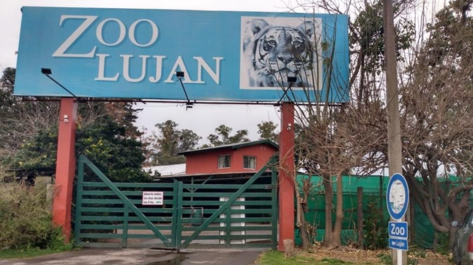
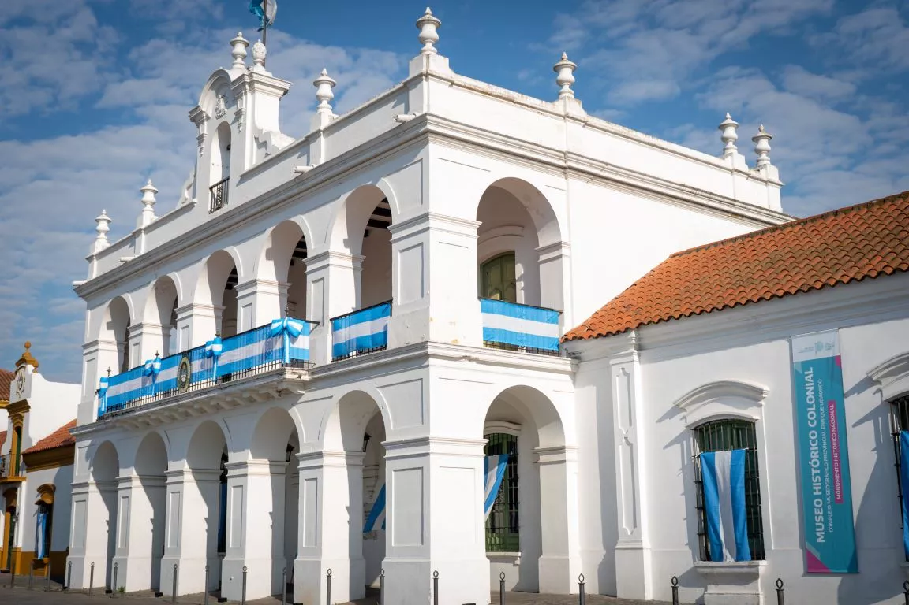
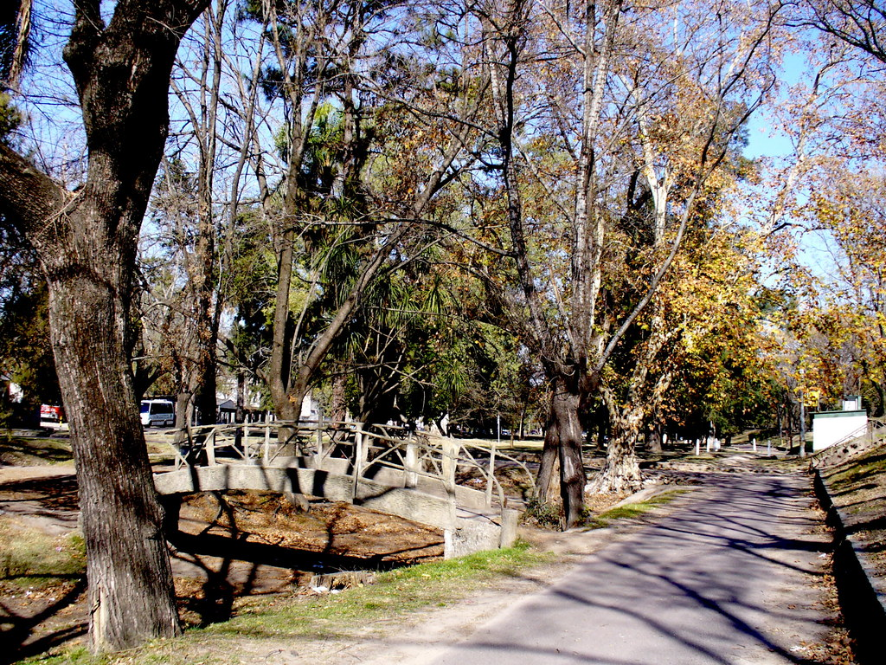
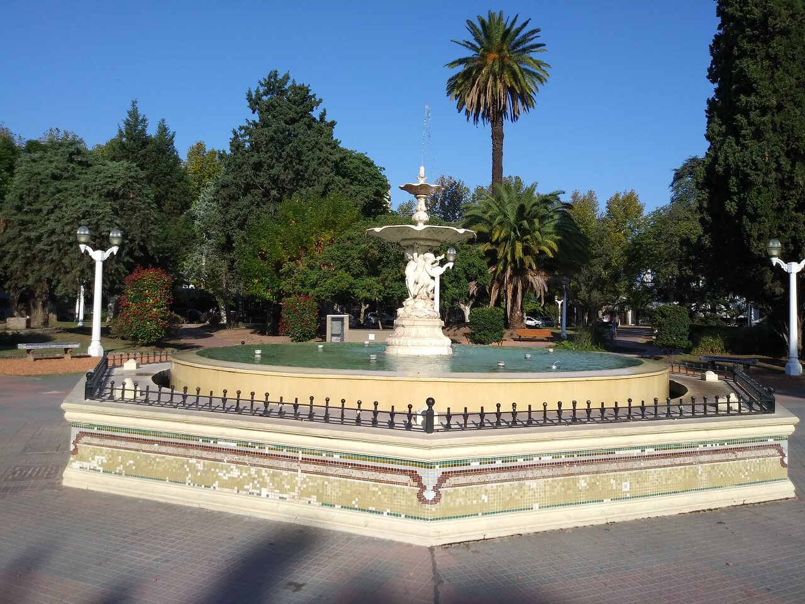

Actividades recomendadas:
Visitar la basílica de Luján
Bienvenido a la Basílica de Nuestra Señora de Luján, un lugar lleno de historia, fe y arquitectura impresionante. Ubicada en la ciudad de Luján, Argentina, esta basílica es uno de los destinos religiosos más importantes de América del Sur.
La Basílica de Luján es conocida por su imponente estructura de estilo neogótico, sus detalladas esculturas y sus hermosos vitrales. No solo es un lugar de peregrinación, sino también un testimonio de la habilidad artística y la devoción que ha perdurado a lo largo de los años.
Te invitamos a explorar cada rincón de este lugar sagrado, desde la majestuosidad de la nave central hasta la tranquilidad de sus capillas laterales. Siente la espiritualidad que emana de cada piedra y descubre la rica historia que rodea a esta magnífica edificación.
Visitar el Zoológico de Luján
¡Bienvenido al fascinante mundo animal en el Zoológico de Luján! Este extraordinario lugar te invita a sumergirte en la belleza y diversidad de la vida salvaje, ofreciéndote una experiencia única llena de descubrimientos y emociones.
Al ingresar, te encontrarás cara a cara con una asombrosa variedad de especies, desde majestuosos leones hasta tiernos pingüinos, cada uno habitando espacios diseñados para imitar sus hábitats naturales.
Para los amantes de la naturaleza y la biodiversidad, este zoológico es una ventana al reino animal que fomenta la conciencia sobre la importancia de conservar nuestro precioso entorno. Podrás aprender sobre los esfuerzos de conservación y participar en programas educativos diseñados para inspirar el respeto hacia todas las formas de vida.
Visitar el Complejo Museográfico Provincial Enrique Udaondo
El Complejo Museográfico Provincial Enrique Udaondo es un destacado centro cultural que rinde homenaje a la rica historia y patrimonio de la región. Este complejo, inaugurado en 1965, lleva el nombre de Enrique Udaondo, ilustre historiador argentino y destacado ciudadano lujanense.
El museo se encuentra emplazado en un edificio de estilo neocolonial, rodeado por un entorno natural que contribuye a crear una atmósfera única para los visitantes. Su arquitectura, en sintonía con la herencia colonial de la ciudad, añade un encanto especial a la experiencia museística.
Además de las exposiciones permanentes, el Complejo Museográfico organiza eventos culturales, conferencias y actividades educativas que buscan promover el interés por la historia y la cultura local. Talleres para niños, charlas temáticas y recorridos guiados enriquecen la experiencia de los visitantes, convirtiendo al museo en un espacio dinámico y participativo.
Pasear por el Parque Ameghino
El Parque Ameghino se extiende en una vasta área verde, ofreciendo a sus visitantes la oportunidad de sumergirse en la belleza de la flora y fauna autóctonas. Sus cuidados jardines, senderos sinuosos y áreas de descanso proporcionan el escenario perfecto para paseos relajantes, picnics familiares y momentos de tranquilidad.
El Parque Ameghino también cuenta con espacios recreativos para toda la familia. Áreas de juegos infantiles, canchas deportivas y zonas de picnic fomentan la diversión y el esparcimiento para visitantes de todas las edades. Además, eventos culturales y actividades al aire libre se realizan regularmente, creando un ambiente vibrante y comunitario.
Los amantes de la naturaleza pueden disfrutar de la biodiversidad presente en el parque, observando aves, mariposas y otras especies que habitan en este entorno cuidadosamente preservado. La conexión con la naturaleza y la historia se fusionan en el Parque Ameghino, creando una experiencia enriquecedora para todos aquellos que lo exploran.
Visitar la Plaza Colón
La Plaza Colón de Luján, es un lugar emblemático que captura la esencia y la historia de la región. Rodeada por edificaciones históricas y a pocos pasos de la famosa Basílica de Nuestra Señora de Luján, la plaza se erige como un punto de encuentro vibrante y lleno de vida.
El espacio verde de la Plaza Colón se extiende generosamente, ofreciendo un refugio tranquilo en medio del bullicio urbano. Sus cuidados jardines, árboles frondosos y bancos estratégicamente ubicados invitan a residentes y visitantes por igual a disfrutar de momentos de relajación y contemplación. Es un lugar donde el tiempo parece detenerse, permitiendo a quienes lo visitan escapar por un momento de las prisas diarias.
Caminar por los senderos que serpentean a través de la plaza es sumergirse en la atmósfera única de esta encantadora ciudad. Ya sea para disfrutar de una tarde tranquila, participar en actividades comunitarias o simplemente admirar la arquitectura circundante, la Plaza Colón de Luján se presenta como un espacio donde la historia y la modernidad convergen para crear una experiencia única y enriquecedora.
Cómo llegar a Luján
Luján se encuentran a unos 70 kilómetros de la ciudad de Buenos Aires.
¡Descubre Luján con la magia de TrasladosCombis!
¿Sueñas con un viaje inolvidable a Luján? Déjate llevar por la experiencia única que te ofrece TrasladosCombis. Te guiaremos por un recorrido lleno de historia, fe y tradición, sin preocupaciones y con la comodidad que te mereces.
Opciones para todos los gustos:
Excursiones de un día: Salidas desde diferentes puntos de la ciudad, con diferentes horarios para que puedas elegir el que mejor se adapte a tu agenda.
Viajes con alojamiento: Disfruta de una escapada de fin de semana o más días, con alojamiento en hoteles de primera categoría y actividades para toda la familia.
Tours personalizados: Creamos experiencias a medida, adaptándonos a tus necesidades e intereses.
¿Por qué elegirnos?
Experiencia y profesionalismo: Contamos con un equipo de guías especializados en Luján, que te brindarán información precisa y amena durante todo el viaje.
Comodidad y seguridad: Viajamos en unidades modernas y confortables, con todas las medidas de seguridad para que disfrutes sin preocupaciones.
Precios accesibles: Ofrecemos diferentes opciones para todos los presupuestos, con la mejor relación calidad-precio.
Atrás